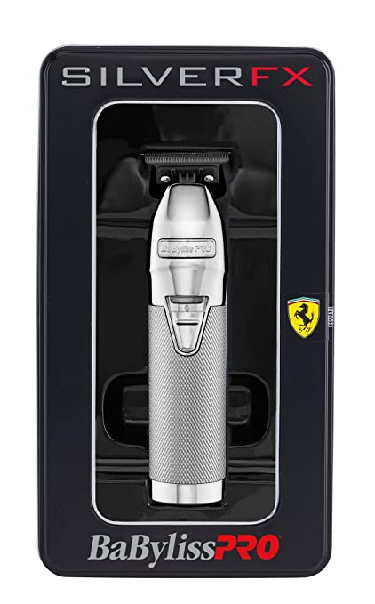
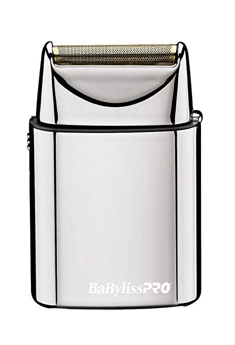
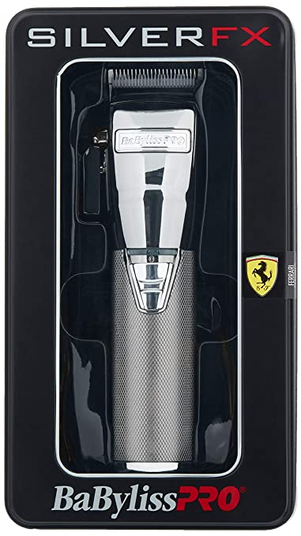
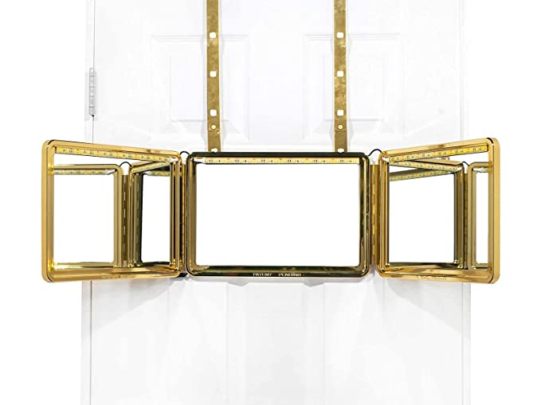
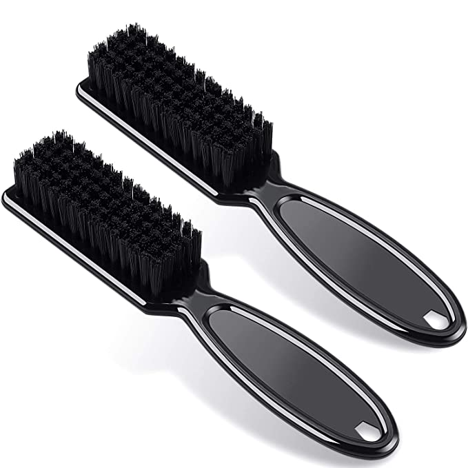
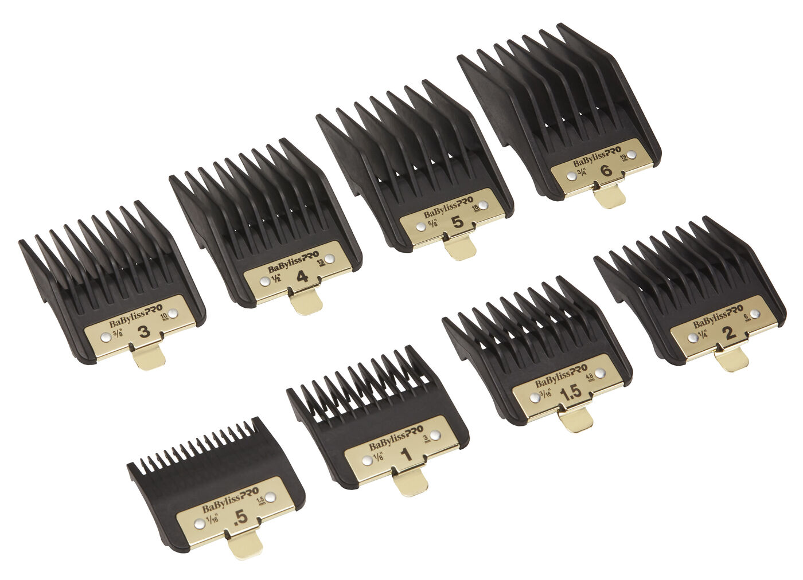
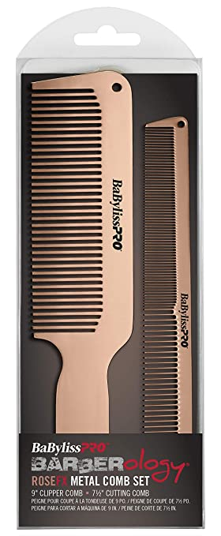
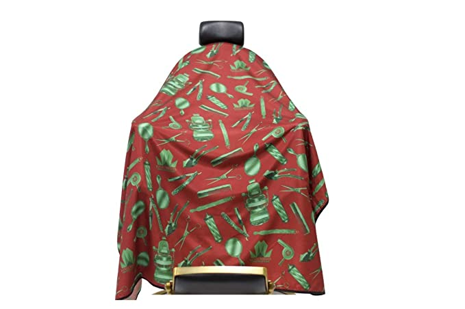

$ 184.99
The BaBylissPRO SilverFX Outlining Hair Trimmer is a professional, all metal, cord/cordless lithium outlining hair trimmer. Featuring an exposed T-blade with 360 degree views & high-torque, Italian-designed engine.
$ 54.99
The BaBylissPRO FOILFX01 cordless shaver is a professional, compact-size metal foil shaver equipped with a single, hypoallergenic gold foil. It comes with a storage pouch & 2 AA batteries.
$ 209.99
The BaBylissPRO SILVERFX is a cord/cordless lithium clipper, equipped with a high-torque, Italian-designed engine. A perfect tool for cutting all hair textures with power, speed, & precision.
$ 149.95
A true embodiment of prestige, we proudly introduce The Self-Cut System Kings Gold edition. The first-ever 14 Karat Gold Plated Three Way Mirror is finally here! Designed for the elite, titans of industry, and barber influencers alike.
$ 5.99
this brush can be applied as a beard brush or for cleaning blade of hair clipper, suitable for both barber and personal household use, and mini size is suitable for home use as well as travel use
$ 29.99
Perfect clipper guard set, Its suitable for any BaBylissPRO clipper. BaByliss4Barbers Premium Clipper Guards with fiberglass reinforced nylon and metal clips. The metal clip on each comb guard secures the guard onto the blade
$ 25.99
This 2 pack Barberology metal comb set has a 9" clipper comb and a 7 1/2" cutting comb. Ultra thin combs are made of high quality stainless steel with rose gold-colored electroplating. Great for cutting, blending, and fading
$ 25.99
King Midas Barber Capes are made with all high quality materials. These hair cutting capes last long and perform great in any busy barbershop or salon. These capes are large and provides maximum coverage for all your clients.